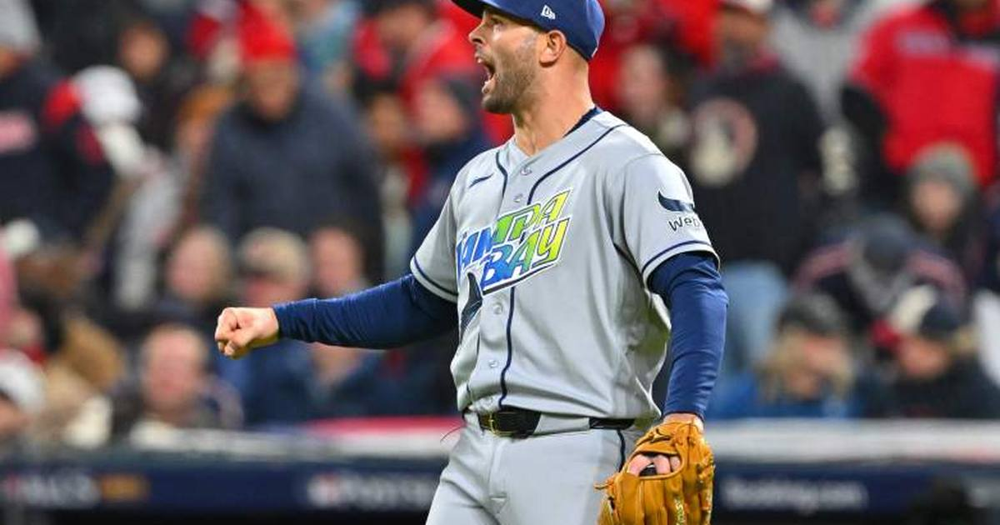

Rays Weighing Nick Martinez Over Drew Rasmussen for World Series Game 1
Tampa Bay has named Nick Martinez its Game 1 starter for Friday's World Series opener in Milwaukee, holding ace Drew Rasmussen for Game 2 to give him extra rest — confirming the scenario Ken Rosenthal reported the Rays were deliberating that morning.

Disclosure: this post contains affiliate links. I earn a commission on qualifying purchases.
The World Series opens Friday night in Milwaukee, and the Tampa Bay Rays' Game 1 mystery is solved: Nick Martinez gets the ball in the opener, with ace Drew Rasmussen held for Game 2. Manager Kevin Cash confirmed the call Thursday — exactly the scenario Ken Rosenthal of The Athletic reported the club was weighing that morning: extra rest for Rasmussen after his heavy postseason workload.
As MLB Trade Rumors summarized, Rasmussen seems like the logical choice, but Rosenthal added that Rays officials were "deliberating over how to proceed" as of Wednesday.
The scenario
Rest is the entire pitch. Rasmussen is Tampa Bay's ace, and an extra day before his first World Series appearance is the kind of margin the Rays have built their identity on exploiting. Rosenthal's full picture has Martinez opening the series, Rasmussen following in Game 2, and Freddy Peralta — the former Brewer — on tap for Game 3 back in Milwaukee's building.
The Brewers' side of the matchup is no mystery: Jacob Misiorowski gets the ball for Milwaukee on Friday. So the opener is the calculated gamble: spot Martinez against Milwaukee's ace, then unleash the rested Rasmussen in Game 2.
Game 1 facts
Series: 2026 World Series, Game 1
Date: Friday, October 23
Location: Milwaukee
Brewers starter: Jacob Misiorowski
Rays starter: Nick Martinez (Rasmussen held for Game 2)
Both clubs are chasing the first World Series title in franchise history, so every rotational edge matters. Cash's call is final: Martinez in Game 1, Rasmussen in Game 2.
Sources: MLB Trade Rumors, ESPN
Watch
Source: "LIVE: Brewers vs. Rays WORLD SERIES Is Almost Here! 🍺🏆 | Game 1 Preview | One More Round" — ESPN Milwaukee. The crew breaks down everything before Friday night: the Game 1 Misiorowski vs. Rasmussen question, Milwaukee's eight-day layoff, Freddy Peralta's return to Milwaukee, and the keys to a first-ever title for either club.
Gear up: Sports category post → [Fanatics](https://fanatics.93n6tx.net/WOLjqe): via Fanatics